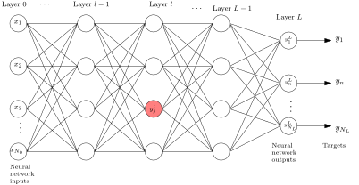

Backpropagation: A Proper Matrix Derivation
Table of Contents
ML Primer: The Whats and the whys?
If you are unfamiliar with machine learning, you wouldn't know what backpropagation is. Chances are you can't even tell from the title of this blog that this blog is about machine learning. Well, actually this blog is not about machine learning, it's just about one small portion of it, the backpropagation algorithm. Still I want to give a small primer about machine learning, specifically feed forward neural networks, so that we are on the same page when we talk about the backpropagation algorithm.
Say you have a dataset of housing prices. There are information about 100 houses in the dataset. For each house you have area in square meters, number of rooms, number of floors and it's price. Your task is to go through this data and "learn" some relation between the features of the houses and its price. Note, I said "learn" and not memorize because now your next task is to predict the price of a house, which is not in this dataset. So, given the same features about this unseen house, you have to predict its price. How will you do it? What patterns will you keep in your mind? Could there be some biases? Will your predictions depend on your mood and what you ate for the lunch? And one last question… what if tomorrow I come with 1000 more data points (house features and there prices) and ask you to "learn" these as well? And then I give you information about 10,000 houses and ask you to predict their prices?
Well, by now you should know this is not a task for a human being to "learn" these prices, but this is a task for a machine to learn and predict. This is a machine learning task.
What's in a machine learning model?
To write a computer program that can predict outcomes by learning from a set of examples, we can build a "neural network". The details of a specific kind of neural network, known as the multilayer perceptron (MLP) is coming up in next section, but for now think of neural network as a black box with the following properties:
Figure 1: A typical neural network black box. With inputs outputs and a highly configurable relationship between the two.
Ability to take the features as input
So in our example, the feature of a house is its area in square meters, number of rooms and number of floors of a house. So basically our neural network should have an ability to take 3 numbers as input.
Giving an output that "looks like" the desired output
When I say "looks like" desired output, I mean to say weather the output should be a number, or a list of numbers, or an image or sound etc. In our example, we want to predict the price of a house. So for our neural network black box, it should have an ability to spit out one number as output, when we give it a set of three numbers in input.
Sufficiently tunable relationship between inputs and outputs
Anyone can make a black-box that can take three numbers as input and give one number as output, but what we want is the ability to change the behavior of this black box to "teach" it how to predict. We should be able to change how it calculates the output when some particular input is given to it. That way we can come up with the strategies, to make it learn how to predict better.
The third point here is very important. The machine learning procedure is as follows: we start with a neural network with appropriate number of inputs and outputs, and some random relationship between them. Now as the relationship between inputs and output is totally random, the predictions will also be totally garbage. The neural network might say that Ambani's Antilla is available for 30 rupees and a Prime Minister Awas home has a price of 1 billion rupees. But, because of the third point we can make the predictions better. We can show one example to the neural network, i.e. give the feature of a house in our dataset as input, and look how good or bad the output is? Then tweak the parameters of the neural network to reduce the difference between the predicted values and actual prices. Then repeat the process for all the examples. This blog is about one such tweaking strategy, the backpropagation algorithm. Backpropagation algorithm tells us how to tweak the parameters of the neural network, in order to make predictions close to actual prices.
Neural Networks
The forward propagation of data
We have seen a black box model of a generic neural network. Let's open one such black box, the multilayer perceptron. Here's how it looks like:

Figure 2: An MLP neural network with \(I\) inputs, \(O\) outputs and \(L\) hidden layers.
In our example of housing data predictions, you can imagine only 3 nodes in the input layer and one in the output layer. It's easy to see how the MLP in Figure 3 follows first two points mentioned above about input and output. The interesting details are about achieving point 3 about tunable relationship between inputs and outputs. Say we have \(3\) input parameters, then we will have \(3\) nodes in the input layer of our neural network. Then in the next layer, which is a hidden layer, say we choose to have \(5\) nodes. These numbers of nodes in hidden dimensions is a design choice and upto us to choose. Then, there will be a link from all the three input nodes to all five nodes of the next hidden layer. In total there will be \(3 \times 5 = 15\) connections. Each connection will have a random number associated to it. These numbers are called weights. Weight of the connection from node \(i\) of input layer to node \(j\) of first layer is denoted as \(w_{ji}^{1}\). The superscript \(1\) is not an exponent but an index. The index of the layer.
NOTE: The terminology about the number of layers is a bit ambiguous in ML community. The way how hidden layers are counted in a neural network differs. Here, we are saying the input layer is layer 0 and then there are \(L\) subsequent layers, therefore \(L\) set's of tunable weights. I chose this terminology because this makes the number of layers equal to the number of sets of tunable parameters.
Now to see how we get the output from the inputs, we just focus on first node of layer 1 and how its output is computed from the inputs and the randomly initialized weights. Let's say that the input features are \(x_{1}, x_{2}\) and \(x_{3}\). Then the weights connecting these three nodes to the first node of next layer will be \(w_{11}^{1}, w_{21}^{1}\) and \(w_{31}^{1}\) respectively.
Figure 3: Explaining forward propagation, deciding the outputs of nodes from the inputs.
All the inputs are multiplied with the weights on the connections, and then added together. Then, every hidden node has one more number attached to it, called the bias. Bias of node \(j\) of layer \(l\) is denoted as \(b_{j}^{l}\). This bias is added to the previous sum. This gives us \(w_{11}^{1} x_{1} + w_{21}^{1} x_{2} + w_{31}^{1}x_{3} + b^{1}_{1}\) denoted bt \(z_{1}^{1}\) on the first node of layer 1. To add more complexity between the relationship between input and output, \(z_{1}^{1}\) is passed via an activation function. Activation functions are certain non-linear functions like sigmoid or ReLU (see Figure 4), that make the input output relationships more 'complex', by adding non-linearities.
Figure 4: Some popular activation functions
In this blog we will use the function \(\sigma(z)\) as a placeholder for any activation function. We need not worry about the particular realization of the activation function, the important thing is that for every node, the computed quantity from the previous node \(z_{j}^{l}\) is passed through the activation function, to get the output \(y_{j}^{l}\) of that particular node. So the final output of node 1 in layer 1 will be \[ y_{1}^{1} = \sigma(z_{1}^{1}) = \sigma\left( w_{11}^{1} x_{1} + w_{21}^{1} x_{2} + w_{31}^{1}x_{3} + b^{1}_{1} \right) \]
This operation is done for every node in the neural network. Let's look at a general node, node \(j\) of layer \(l\), and form a matrix equation for the forward propagation.
Forward propagation: Loads of matrix multiplications
First things first. Let's formalize the notations. We have \(L\) layers in our neural network, and therefore \(L\) set's of tunable weights and biases. Layer \(l\) contains \(N_{l}\) nodes. Therefore, at layer \(l\) we have \(N_{l} \times N_{l-1}\) weights denoted by \(w_{ji}^{l}\) and \(N_{l}\) biases denoted by \(b_{j}^{l}\). Weight \(w_{ji}^{l}\) connects node \(i\) of layer \(l-1\) to node \(j\) of layer \(l\) (yes, I know the indices on \(w\) looks backward). We can collect all weights and biases of layer \(l\) in a matrix \(\mathbf{W}^{l}\) and a vector \(\mathbf{b}^{l}\) as follows:
\begin{align*} &\mathbf{W}^{l} = \begin{bmatrix} w_{11}^{l} & \cdots & w_{1,N_{l-1}}^{l} \\ \ddots & w_{ji}^{l} & \ddots \\ w_{N_{l}, 1}^{l} & \cdots & w_{N_{l},N_{l-1}}^{l} \end{bmatrix} & &\mathbf{b}^{l} = \begin{bmatrix} b_{1}^{l} \\ \vdots \\ b_{N_{l}}^{l} \end{bmatrix} \end{align*}Now consider the node \(j\) on layer \(l\) of the neural network. It has \(N_{l-1}\) inputs coming from previous layer. These inputs are \(y_{i}^{l-1}\) where \(i = 1, \cdots, N_{l-1}\), and they themselves are the outputs from the previous layer. We multiply these inputs with corresponding weight, i.e. \(y_{i}^{l-1}\) is multiplied with \(w_{ji}^{l}\), for all \(i = 1, \cdots N_{l-1}\), and then summed together along with the bias of the node, to give us \(z_{j}^{l} = \sum_{n=1}^{N_{l}} w_{ji}^{l}y_{i}^{l-1} + b_{j}^{l}\). This \(z_{j}^{l}\) is then passed through the activation, giving us the node output \(y_{j}^{l} = \sigma\left(z_{j}^{l}\right)\).
Figure 5: Node \(j\) for layer \(l\)
Writing the output for all the nodes in layer \(l\), will motivate us to delve into the matrix notation.
\begin{align*} z_{1}^{l} &= &&w_{11}^{l} y_{1}^{l-1} &&+ &&w_{12}^{l} y_{2}^{l-1} &&+ \cdots + &&w_{1, N_{l-1}}^{l} y_{N_{l-1}}^{l-1} &&+ &&b_{1}^l \\ &\vdots \\ z_{j}^{l} &= &&w_{j1}^{l} y_{1}^{l-1} &&+ &&w_{j2}^{l} y_{2}^{l-1} &&+ \cdots + &&w_{j, N_{l-1}}^{l} y_{N_{l-1}}^{l-1} &&+ &&b_{j}^l \\ &\vdots \\ z_{N_{l}}^{l} &= &&w_{N_{l}, 1}^{l} y_{1}^{l-1} &&+ &&w_{N_{l}, 2}^{l} y_{2}^{l-1} &&+ \cdots + &&w_{N_{l}, N_{l-1}}^{l} y_{N_{l-1}}^{l} &&+ &&b_{N_{l}}^l \\ \end{align*}which can be written in matrix notation as:
\begin{align*} \begin{bmatrix} z_{1}^{l} \\ \vdots \\ z_{j}^{l} \\ \vdots \\ z_{N_{l}}^{l} \end{bmatrix} = \begin{bmatrix} w_{11}^{l} & w_{12}^{l} & \cdots & w_{1, N_{l-1}}^{l} \\ \vdots & \vdots & \ddots & \vdots \\ w_{j1}^{l} & w_{j2}^{l} & \cdots & w_{j, N_{l-1}}^{l} \\ \vdots & \vdots & \ddots & \vdots \\ w_{N_{l}, 1}^{l} & w_{N_{l}, 2}^{l} & \cdots & w_{N_{l}, , N_{l-1}}^{l} \\ \end{bmatrix} \begin{bmatrix} y_{1}^{l-1} \\ y_{2}^{l-1} \\ \vdots \\ y_{N_{l-1}}^{l-1} \end{bmatrix} + \begin{bmatrix} b_{1}^{l} \\ \vdots \\ b_{j}^{l} \\ \vdots \\ b_{N_{l}}^{l} \end{bmatrix} \end{align*}Giving us a very good looking matrix equation, the core equation of the forward propagation:
\begin{equation*} \bbox[10px, border: 2px solid black]{\mathbf{z}^{l} = \mathbf{W}^{l} \mathbf{y}^{l-1} + \mathbf{b}^{l}.} \end{equation*}And the output of the \(l^{th}\) layer is this vector \(\mathbf{z}^{l}\) passed through the activation function
\begin{equation*} \bbox[10px, border: 2px solid black]{\mathbf{y}^{l} = \sigma\left(\mathbf{z}^{l}\right)} \end{equation*}This is the heart of forward propagation. For input, we define \(\mathbf{y}^{0} \triangleq \mathbf{x}\) and the forward propagation looks like a repeated application of: matrix-vector product followed by addition with another bias vector, and then applying the activation function.
How to measure the quality of output?
Till now the numbers of output of the neural network networks is denoted by \(O\), but by now, I think the reader is convinced that it makes more sense that we should denote the number of outputs as \(N_{L}\) and number of inputs as \(N_{0}\). For the interests of the readers who are skimming through the equations, let's highlight this fact \[ \mbox{Let's define } N_{0} = I \mbox{ and } N_{L} = O. \]
After the forward propagation, we have an output of size \(N_{L}\). Recall, the number of nodes in input and output layers, are fixed by the problem. That means, in the dataset, each data point has \(I = N_{0}\) input features, and \(O = N_{L}\) target features. In our running example of housing data \(N_{0} = 3\) and \(N_{L} = 1\).
Now the question is, after the forward pass in our neural network, what happens at the output layer? We have a randomly initialized neural network, that's giving out \(N_{L}\) numbers. But they are nowhere close to the \(N_{L}\) numbers we are expecting. We need to train our neural network to make better predictions. So we need to tell our neural network to change its parameters (weights and biases). But even before that, we need to make a measure of the badness of the predictions. Because if our predictions are very bad, we need to change the neural network parameters very much. But if the prediction is only bad, then the parameters should only change much.
One very common measure of badness of the output is mean square error. It is defined as the average of the squares of difference between the predictions and actual value. Now, the loss is although computed only using the outputs of the last layer, note that the loss is actually the function of all the inputs and the weights and biases of the neural network. Therefore, the loss is written as (loss is sometimes also called cost): \[ C\left( \mathbf{x}, \mathbf{y}, \mathcal{W} \right) \triangleq \frac{1}{N_{L}} \sum_{n=1}^{N_{L}} {(y_{n}^{L} - y_{n})}^{2} \] Where \(\mathbf{x}\) is the vector constituting of all the input features, \(\mathbf{y}\) is the vector of targets, and \(\mathcal{W}\) is a set of all the weights and biases. Note that the loss function is always positive, and it is equal to zero if and only if the predictions exactly match the actual output values. With this measure of quality of output defined, we can now build a strategy to minimize this loss, thus making our predictions better.
Improving predictions, Reducing loss: Gradient descent
To have a good grasp on machine learning, you should have a good grasp on calculus. But to have good grasp on gradient descent, only knowing the following concept is fine: if \(\frac{dy}{dx}\) is positive, then decreasing \(x\) will also decrease \(y\) and if \(\frac{dy}{dx}\) is negative, then increasing \(x\) will decrease \(y\). Read it again, and make sure that you agree. Now, if someone gave you a function \(y = f(x)\) and ask you to find the minimum value of \(y\), here is what you can do: pick a random value, say \(x_{0}\), then compute \(\frac{df}{dx}(x_0)\). If the derivative is positive, that means the function is increasing at \(x_{0}\). If you have picked a point little less than \(x_{0}\) then you will get a smaller \(y\) value. So in the next step, you pick another number \(x_{1} = x_{0} - \delta\) and compute \(f(x_{1})\). You would have done the reverse if \(\frac{df}{dx}(x_0)\) comes out to be negative. That means the function \(f(x)\) is decreasing at \(x_{0}\) and you would have gotten smaller \(y\) value if you had chosen some higher \(x\) value in the start. So in the next step you will choose \(x_{1} = x_{0} + \delta\) and then compute \(f(x_{1})\), to hopefully get lower value than before.
Figure 6: Finding minima via gradient descent
This \(\delta\) is a very interesting number. Firstly, this \(\delta\) should be a positive number, otherwise it'll just defeat the purpose of reducing the value of \(y\). Second, it would be great if this \(\delta\) also tell us how far should we go from \(x_{0}\). That is, if the rate of increase or decrease of the function is very high, that means we are far away from nearby minima, and we should take bigger steps, and if the rate of change is small, then that means we are close to minima, and we should slow down.
These observations suggest: why not make the step we are taking proportional to -ve of the derivative. That is, we define \(\delta \triangleq -r \frac{df}{dx}\) and then \(x_{1} = x_{0} - r\frac{df}{dx}(x_{0})\) always, no need to check if we need to add or subtract \(\delta\). This also give a good enough measure of the size of step we want to take. Large gradients mean large steps and small gradients means small steps. The constant \(r\) is known as the learning rate and it controls the size of the steps. This is also a design parameter and should be chosen by hit and trial.
How does this little detour help us? Well, in our problem we need to reduce the loss, which is the function of all the neural network parameters. We can compute the gradient (which is a multivariable derivative) of the loss with respect to one of the parameter and then update that particular parameter based on that gradient. Then this can be done for all the parameters. Therefore, our next goal is to compute the gradient of the loss with respect to the neural network weights and biases and then update these parameters according to the following formula: \[ \mathcal{W} \leftarrow \mathcal{W} - r \frac{\partial C}{\partial \mathcal{W}}. \] Which means all the neural network parameters, \(\mathcal{W}\), are now updated to \(\mathcal{W} - r \frac{\partial C}{\partial \mathcal{W}}\).
Backpropagation Algorithm
A recap
If you have just skipped to this section, or need a refresher, here's what we have till now:
We have a feature vector \(\mathbf{x}\) of length \(N_{0} (= I)\) and a target vector \(\mathbf{y}\) of size \(N_{L} (= O)\). For notations’ sake we are defining \(\mathbf{y}^{0} = \mathbf{x}\). We have a neural network with \(L\) layers, with \(l^{th}\) layer having \(N_{l}\) nodes. The weight of the connection joining node \(i\) of layer \(l-1\) and node \(j\) of layer \(l\) is \(w_{ji}^{l}\). All the weights of layer \(l\) can be collected in a matrix \(\mathbf{W}^{l} = \left[w_{ji}^{l}\right]\). Node \(j\) of layer \(l\) also has a bias associated to it denoted by \(b_{j}^{l}\). Output of node \(j\) of layer \(l\) is denoted by \(y_{j}^{l}\). This output is computed by passing an intermediate value \(z_{j}^{l}\) through an activation function \(\sigma\). The intermediate value is computed as following: \(z_{j}^{l} = \sum_{i = 1}^{N_{l-1}} w_{ji}^{l} y_{i}^{l-1} + b_{j}^{l}\).
If we collect all the outputs of layer \(l\) in a vector \(\mathbf{y}^{l}\) and all the biases in vector \(\mathbf{b}^{l}\), then the forward pass from layer \(l-1\) to layer \(l\) can be summed up in the following matrix equation:
\begin{equation*} \mathbf{y}^{l} = \sigma\left( \mathbf{W}^{l} \mathbf{y}^{l-1} + \mathbf{b}^{l} \right). \end{equation*}
Figure 7: General forward propagation
At the last layer, we have \(\mathbf{y}^{L}\) as output. The desired target value is \(\mathbf{y}\), and thus we just compute the loss function as \(\frac{1}{N_{L}} \sum_{n=1}^{N_{L}} {(y_{n}^{L}- y_{n}) }^{2}\). Now, we will find the gradients of this loss function with respect to all the weights and biases and then update these weights and biases according to a gradient descent step. Now, moving on…
Let's start computing gradients
The problem with learning backpropagation is keeping track of all the indices. In this article, we will focus on one particular node, node \(j\) of layer \(l\). Then we will look at its properties (inputs, outputs, weights and biases) with relation to nodes in previous and next layer, i.e. layers \(l-1\) and \(l+1\). The index \(i\) will correspond to nodes in previous layer \(l-1\) and index \(k\) will correspond to nodes of next layer \(l+1\).
Figure 8: Let's focus on node \(j\) of layer \(l\) and connected nodes of previous and next layers.
On node \(j\) of layer \(l\), we have the following quantities:
\begin{align*} {\large \begin{split} \color{#fa0000}{ z_{j}^{l} } &= w_{j1}^{l} y_{1}^{l-1} + \cdots + w_{ji}^{l} y_{i}^{l-1} + \cdots + w_{j, N_{l-1}}^{l} y_{N_{l-1}}^{l-1} + b_{j}^{l} \\ \color{#006600}{y_{j}^{l}} &= \sigma\left( z_{j}^{l} \right) \end{split} } \end{align*}Let's try to find the derivative of loss \(C\) with respect to just one weight, \(w_{ji}^{l}\) i.e. \({\partial C}/{\partial w_{ji}^{l}}\). From the above two equations, we notice that \(w_{ji}^{l}\) is only affecting \(z_{j}^{l}\), which in turn is determining \(y_{j}^{l}\). Therefore, we use chain rule of derivative, and plug these two quantities in between as follows:
\begin{align} \label{orga93d4b6} {\large \begin{split} \frac{\partial C}{\partial w_{ji}^{l}} &= \frac{\partial \color{#fa0000}{z_{j}^{l}}}{\partial w_{ji}^{l}} \frac{\partial \color{#006600}{y_{j}^{l}}}{\partial \color{#fa0000}{z_{j}^{l}}} \frac{\partial C}{\partial \color{#006600}{y_{j}^{l}}} \\ &= y_{i}^{l-1} \sigma^{\prime}(z_{j}^{l}) \frac{\partial C}{\partial \color{#006600}{y_{j}^{l}}} \end{split} } \end{align}Now, before computing derivative with respect to \(w_{ji}^{l}\) we need to crack the nut of finding the partial derivative with respect to \(y_{j}^{l}\). But, we will see that finding this partial derivative, will help us see the underbelly of the backpropagation algorithm. Because, the backpropagation is not about computing \({\partial C} / {\partial w_{ji}^{l}}\) but about computing \({\partial C} / {\partial y_{j}^{l}}\). Let's calculate that:
Cracking \({\partial C} / {\partial y_{j}^{l}}\)
Consider again Figure 8. We can see that \(y_{j}^{l}\) can affect the loss \(C\) only by affecting the inputs to the layer \(l+1\). \(y_{j}^{l}\) is affecting \(z_{k}^{l+1}\), for nodes \(k = 1, 2, \cdots N_{l+1}\) of layer \(l+1\). These \(z_{k}^{l+1}\) then determine \(y_{k}^{l+1}\) which are then forward propagated to compute \(C\). Let's again use chain rule and add the effect of all \(z_{k}^{l+1}\) and \(y_{k}^{l+1}\) as follows:
\begin{align*} {\large \begin{split} \frac{\partial C}{\partial y_{j}^{l}} &= \sum_{k = 1}^{N_{l+1}} \frac{\partial z_{k}^{l+1}}{\partial y_{j}^{l}} ~ \frac{\partial y_{k}^{l+1}}{\partial z_{k}^{l+1}} ~ \frac{\partial C}{\partial y_{k}^{l+1}} \\ &= \sum_{k=1}^{N_{l+1}} w_{kj}^{l+1} ~ \sigma^{\prime}(z_{k}^{l+1}) ~ \frac{\partial C}{\partial y_{k}^{l+1}} \end{split} } \end{align*}If this equation does not spark joy, let us write the above equation for every \(j\) in layer \(l\), i.e. for \(j = 1, 2, \cdots, N_{l}\).
\begin{align*} \frac{\partial C}{\partial y_{1}^{l}} &= \sum_{k=1}^{N_{l+1}} w_{k1}^{l+1} ~ \sigma^{\prime}(z_{k}^{l+1}) ~ \frac{\partial C}{\partial y_{k}^{l+1}} \\ \frac{\partial C}{\partial y_{2}^{l}} &= \sum_{k=1}^{N_{l+1}} w_{k2}^{l+1} ~ \sigma^{\prime}(z_{k}^{l+1}) ~ \frac{\partial C}{\partial y_{k}^{l+1}} \\ &\vdots \\ \frac{\partial C}{\partial y_{N_{l}}^{l}} &= \sum_{k=1}^{N_{l+1}} w_{kN_{l}}^{l+1} ~ \sigma^{\prime}(z_{k}^{l+1}) ~ \frac{\partial C}{\partial y_{k}^{l+1}} \\ \end{align*}Still nothing? Let's write these equations in matrix format (if you are confused why we are not using column matrices, read the next note).
\begin{align*} &{\Large \begin{bmatrix} \frac{\partial C}{\partial y_{1}^{l}} & \frac{\partial C}{\partial y_{2}^{l}} & \cdots & \frac{\partial C}{\partial y_{N_{l}}^{l}} \end{bmatrix} =} \\ &{\Large \begin{bmatrix} \frac{\partial C}{\partial y_{1}^{l+1}} & \frac{\partial C}{\partial y_{2}^{l+1}} & \cdots & \frac{\partial C}{\partial y_{N_{l+1}}^{l+1}} \end{bmatrix}} \begin{bmatrix} \sigma^{\prime}(z_{1}^{l+1}) & & & \\ & \sigma^{\prime}(z_{2}^{l+1}) & & {\Huge 0} \\ {\Huge 0} & & \ddots & \\ & & & \sigma^{\prime}(z_{N_{l+1}}^{l+1}) \end{bmatrix} \begin{bmatrix} w_{11}^{l+1} & \cdots & w_{1,N_{l}}^{l+1} \\ \ddots & w_{kj}^{l+1} & \ddots \\ w_{N_{l+1}, 1}^{l+1} & \cdots & w_{N_{l+1},N_{l}}^{l+1} \end{bmatrix} \end{align*}Want more hint? Okay, let's define for layer \(l\)
\begin{align*} \begin{split} \frac{\partial C}{\partial \mathbf{y}^{l}} &\triangleq \begin{bmatrix} \frac{\partial C}{\partial y_{1}^{l}} & \frac{\partial C}{\partial y_{2}^{l}} & \cdots & \frac{\partial C}{\partial y_{N_{l}}^{l}} \end{bmatrix} \mbox{ and} \\ {\huge {\mathbf{\Sigma}^{\prime}}^{l}} &\triangleq \begin{bmatrix} \sigma^{\prime}(z_{1}^{l}) & & & \\ & \sigma^{\prime}(z_{2}^{l}) & & {\Huge 0} \\ {\Huge 0} & & \ddots & \\ & & & \sigma^{\prime}(z_{N_{l}}^{l}) \end{bmatrix} \end{split} \end{align*}Then we can write the above equation as:
\begin{equation} \label{org1717787} \bbox[10px, border: 2px solid black]{\Large \frac{\partial C}{\partial \mathbf{y}^{l}} = \frac{\partial C}{\partial \mathbf{y}^{l+1}} ~ {\mathbf{\Sigma}^{\prime}}^{l+1} ~ \mathbf{W}^{l+1}} \end{equation}Now this result is very concise and important. It states that gradient of \(C\) with respect to \(\mathbf{y}^{l}\) can be computed using \(\mathbf{y}^{l+1}\). And, cherry on top is: we are using same weight matrix \(\mathbf{W}^{l+1}\) that's used for forward propagation. We just need to scale the \(k^{th}\) row of the weight matrix by \(\sigma^{\prime}(z_{k}^{l+1})\). So think of it like, in order to compute the gradient of loss with respect to output of current layer, all the information is coming from the next layer. That's why, the name backpropagation.
NOTE: You may have noticed that we are usually using column notation for vectors. So, vector \(\mathbf{y}\) is a matrix of size \(n \times 1\). One can say if \(\mathbf{y}\) is a column vector then \({\partial C}/{\partial \mathbf{y}}\) should also be a column vector. But that's not the case. In literature if we want to take derivative of a scalar (like \(C\)) with respect to a matrix, say \(\mathbf{A}\), of size \(r \times c\), then the resulting matrix will be of size \(c \times r\). And, \(i, j\) element of \(\frac{\partial C}{\partial \mathbf{A}}\) will be \(\frac{\partial C}{\partial a_{j, i}}\), where \(a_{j, i}\) is the \(j, i\) element of \(\mathbf{A}\).
But wait, are you forgetting the real goal? Our goal was not to compute \({\partial C} / {\partial y_{j}^{l}}\), it was just a stepping stone to compute \({\partial C} / {\partial w_{ji}^{l}}\) in \eqref{orga93d4b6}. So let's do that now.
Computing \(\partial C / \partial w_{ji}^{l}\)
Let's get back to our agenda of finding the gradient of loss with respect of neural network parameters: weights and biases. We have from equation \eqref{orga93d4b6}
\begin{align*} \frac{\partial C}{\partial w_{ji}^{l}} &= y_{i}^{l-1} ~ \sigma^{\prime}(z_{j}^{l}) ~ \frac{\partial C}{\partial y_{j}^{l}} \end{align*}But now because we have a super powerful weapon of \({\partial C} / {\partial \mathbf{y}^{l}}\), why compute \({\partial C} / {\partial w_{ji}^{l}}\) only for a single \(j\)? Let's do it for all nodes in layer \(l\), i.e. for \(j = 1 , \cdots , N^{l}\).
\begin{align*} {\Large \begin{bmatrix} \frac{\partial C}{\partial w_{1i}^{l}} & \cdots & \frac{\partial C}{\partial w_{ji}^{l}} & \cdots & \frac{\partial C}{\partial w_{N^{l}, i}^{l}} \end{bmatrix} = y_{i}^{l-1} \begin{bmatrix} \sigma^{\prime}(z_{1}^{l}) \frac{\partial C}{\partial y_{1}^{l}} & \cdots & \sigma^{\prime}(z_{j}^{l}) \frac{\partial C}{\partial y_{j}^{l}} & \cdots & \sigma^{\prime}(z_{N^{l}}^{l}) \frac{\partial C}{\partial y_{N^{l}}^{l}} \end{bmatrix} } \end{align*}Can you see a matrix equation upcoming? Well, the LHS with all the \(i\)'s are begging to be extended as rows. So here we go… Writing all the equations for every \(i\) in layer \(l-1\), we'll get:
\begin{align*} \begin{bmatrix} \frac{\partial C}{\partial w_{11}^{l}} & \cdots & \frac{\partial C}{\partial w_{j1}^{l}} & \cdots & \frac{\partial C}{\partial w_{N^{l}, 1}^{l}} \\ \vdots & \ddots & \vdots & \ddots & \vdots \\ \frac{\partial C}{\partial w_{1i}^{l}} & \cdots & \frac{\partial C}{\partial w_{ji}^{l}} & \cdots & \frac{\partial C}{\partial w_{N^{l}, i}^{l}} \\ \vdots & \ddots & \vdots & \ddots & \vdots \\ \frac{\partial C}{\partial w_{1N_{l-1}}^{l}} & \cdots & \frac{\partial C}{\partial w_{jN_{l-1}}^{l}} & \cdots & \frac{\partial C}{\partial w_{N^{l}, N_{l-1}}^{l}} \end{bmatrix} &= \begin{bmatrix} y_{1}^{l-1} \\ \vdots \\ y_{i}^{l-1} \\ \vdots \\ y_{N^{l-1}}^{l-1} \end{bmatrix} {\Large\begin{bmatrix} \sigma^{\prime}(z_{1}^{l}) \frac{\partial C}{\partial y_{1}^{l}} & \cdots & \sigma^{\prime}(z_{j}^{l}) \frac{\partial C}{\partial y_{j}^{l}} & \cdots & \sigma^{\prime}(z_{N^{l}}^{l}) \frac{\partial C}{\partial y_{N^{l}}^{l}} \end{bmatrix}} \\ &= \begin{bmatrix} y_{1}^{l-1} \\ \vdots \\ y_{i}^{l-1} \\ \vdots \\ y_{N^{l-1}}^{l-1} \end{bmatrix} {\Large \begin{bmatrix} \frac{\partial C}{\partial y_{1}^{l}} & \cdots & \frac{\partial C}{\partial y_{j}^{l}} & \cdots & \frac{\partial C}{\partial y_{N_{l}}^{l}} \end{bmatrix}} \begin{bmatrix} \sigma^{\prime}(z_{1}^{l}) & & & & \\ & \ddots & & &{\Huge 0} \\ & & \sigma^{\prime}(z_{j}^{l}) & & \\ {\Huge 0} & & & \ddots & \\ & & & &\sigma^{\prime}(z_{N_{l}}^{l}) \end{bmatrix} \end{align*}All this mess can be written down as the following matrix equation.
\begin{align*} \bbox[10px, border: 2px solid black]{\Large \frac{\partial C}{\partial \mathbf{W}^{l}} = \mathbf{y}^{l-1} ~ \frac{\partial C}{\partial \mathbf{y}^{l}} ~ {\mathbf{\Sigma}^{\prime}}^{l}} \end{align*}Now, we know that, to compute the gradient of \(C\) with respect to weights of layer \(l\), i.e. \(\mathbf{W}^{l}\) we first need to compute the gradient with respect to \(\mathbf{y}^{l}\). These gradients can be computed using information from next layer as described in \eqref{org1717787}. Now, let's see how this backpropagation begins from layer \(L\). But before that, let's also find the derivative of the cost function with respect to the biases. They are also very important parameters of our neural network.
Let's not forget the biases: \(\partial C / \partial b_{j}^{l}\)
Let's get straight into it,
\begin{align} \label{orgc8ba8ef} {\large \begin{split} \frac{\partial C}{\partial b_{j}^{l}} &= \frac{\partial \color{#fa0000}{z_{j}^{l}}}{\partial b_{j}^{l}} ~ \frac{\partial \color{#006600}{y_{j}^{l}}}{\partial \color{#fa0000}{z_{j}^{l}}} ~ \frac{\partial C}{\partial \color{#006600}{y_{j}^{l}}} \\ &= \sigma^{\prime}(z_{j}^{l}) ~ \frac{\partial C}{\partial \color{#006600}{y_{j}^{l}}} \end{split} } \end{align}Which is same as equation \eqref{orga93d4b6}, just missing the factor of \(y_{i}^{l-1}\). We can very easily write the equation for biases of all nodes in layer \(l\) as follows: \[ \bbox[10px, border: 2px solid black]{\Large \frac{\partial C}{\partial \mathbf{b}^{l}} = \frac{\partial C}{\partial \mathbf{y}^{l}} ~ {\mathbf{\Sigma}^{\prime}}^{l}} \]
Now, let's see how the backpropagation starts from layer \(L\).
Starting from the end: \(\partial C / \partial \mathbf{y}^{L}\)
It is quite easy to compute gradient of \(C\) with respect to output of last layer. But, this gradient depends on what loss function we choose. Here we will take the example of mean square error which is defined as
\begin{align*} {\large \begin{split} C &= \frac{1}{N} \sum_{n = 1}^{N_{L}} {\left( y_{n}^{L} - y_{n} \right)}^{2} \\ \implies \frac{\partial C}{\partial y_{j}^{L}} &= \frac{2}{N} (y_{j}^{L} - y_{j}) \\ \implies \frac{\partial C}{\partial \mathbf{y}^{L}} &= \frac{2}{N} {(\mathbf{y}^{L} - \mathbf{y})}^{T} \end{split} } \end{align*}where, recall that \(\mathbf{y}\) is the target value.
Bringing it all together
Now we have all parts of the puzzle:
Forward propagation: Predicting (computing) output \(\mathbf{y}^{L}\) of the neural network from a given input \(\mathbf{x}\).
\[ \mathbf{y}^{l} = \sigma\left( \mathbf{W}^{l} \mathbf{y}^{l-1} + \mathbf{b}^{l} \right) \] where \(l = 1, 2, \cdots L\) and \(\mathbf{y}^{0} = \mathbf{x}\).
Loss: Computing cost, \(C\), of the prediction \(\mathbf{y}^{L}\) with respect to the target output \(\mathbf{y}\). \(C\) is a measure of badness of our model, that we need to reduce.
\[ C = \mathcal{L}_{\mathcal{W}}\left( \mathbf{y}^{L}, \mathbf{y} \right) = \frac{1}{N} {\|\mathbf{y}^{L} - \mathbf{y}\|}^{2} \]
Backpropagation: Computing the gradient of the loss \(C\) with respect to layer outputs.
\begin{align*} \frac{\partial C}{\partial \mathbf{y}^{L}} &= \frac{2}{N} {(\mathbf{y}^{L} - \mathbf{y})} & &\mbox{ and if } l < L & \frac{\partial C}{\partial \mathbf{y}^{l}} &= \frac{\partial C}{\partial \mathbf{y}^{l+1}} ~ {\mathbf{\Sigma}^{\prime}}^{l+1} ~ \mathbf{W}^{l+1} \end{align*}Gradient Descent: Computing the gradient of loss \(C\) with respect to neural network parameters.
\begin{align*} \frac{\partial C}{\partial \mathbf{W}^{l}} &= \mathbf{y}^{l-1} ~ \frac{\partial C}{\partial \mathbf{y}^{l}} ~ {\mathbf{\Sigma}^{\prime}}^{l} & &\mbox{ and } & \frac{\partial C}{\partial \mathbf{b}^{l}} &= \frac{\partial C}{\partial \mathbf{y}^{l}} ~ {\mathbf{\Sigma}^{\prime}}^{l} \end{align*}Well this is the gradient computing step, for gradient descent we have
\begin{align*} \mathbf{b}^{l} &\leftarrow \mathbf{b}^{l} - r {\left( \frac{\partial C}{\partial \mathbf{b}^{l}} \right)}^{T} & &\mbox{ and } & \mathbf{W}^{l} &\leftarrow \mathbf{W}^{l} - r {\left( \frac{\partial C}{\partial \mathbf{W}^{l}} \right)}^{T} \end{align*}All the steps of computing the gradients can be summarized in the following figure:
Figure 9: Entire process of learning from single example. Input features: \(\mathbf{x}\), target: \(\mathbf{y}\)